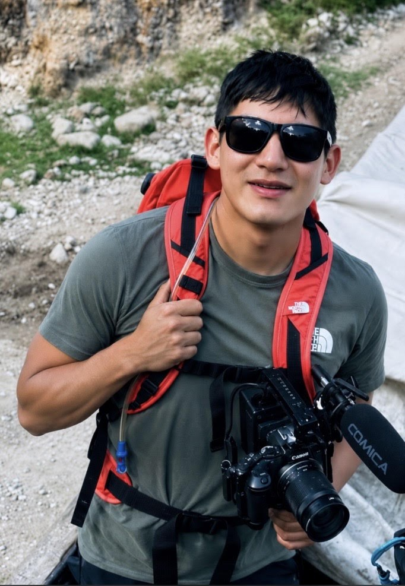

About Daniel

Though my filmmaking i want to be known for capturing content that is a key piece for pushing the final mission.
Daniel Yanac McDonald . Born and raised in Peru, living out a life to serve others. A Sophomore student at Cedarville University seeking to find new ways to learn from others to develop my skills and knowledge about my trade in Media Production. I drawn by capturing moments and experiences that showcases specific points in peoples lives .

Connection.
Service.
Film.
I would like to Film meaningful content that connects clients to their local businesses products and connect people to the gospel through mission organizations,
I serve people through making meaningful content that helps businesses to see better statistics in their sales and lower the price for missions organizations to make content for them.
Peru
I wanted to capture specific events reflected Gods work in the minstry in peru through creation through kids reading the bible in their own native language, Quechua
Filmed by Daniel Yanac McDonaldSilent clips / Select a frame